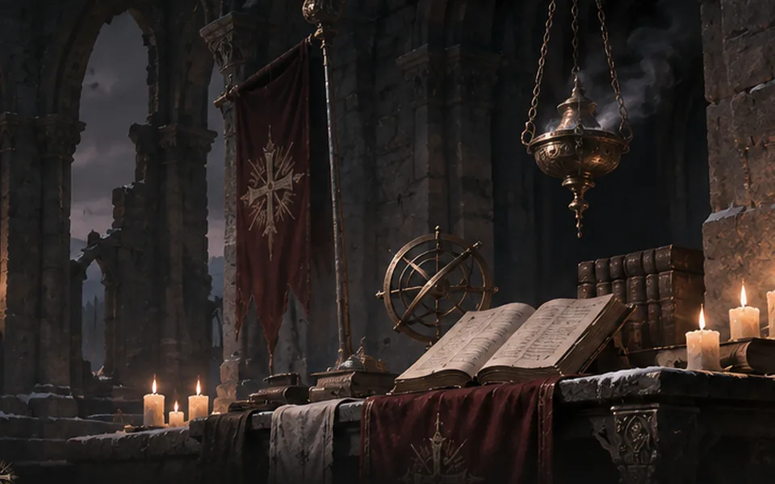

V3.7 原文档案 · 按原稿顺序完整收录 · 未删节
V3.7 原文档案 · 按原稿顺序完整收录 · 未删节十、禁阅卷宗
井底抄本
〔无署名羊皮卷·断页〕
卡利班碎裂后，有一块石头没有落下。
我们把井建在它上面。
最后一句的“我们”被另一种墨水涂掉。
〔Σ-9，静滞前录音〕
下面有一道门。
门上的剑徽，朝着里面。
我够不到把手。
〔旧渠人关于失色季的争执〕
“是从上面来的。”
“井水先亮。你那年还没有出生。”
〔阿历克斯私人数据板·M42〕
井底／轨道／第三舰队
起点：＿＿＿＿
终点：＿＿＿＿
数据板在此处留下了一道纵向裂痕。
〔厄声裂隙，失联呼号〕
这里是——
我们已经——
不要回答第二次。
〔金穹未完成的草图〕
穹心没有人物。绘图底线通向一个不在石廊地图上的方位。
〔无法归档的字句〕
我们还没去过那里。

深渊之数：监听残页
条目一：始鸣
567.M34。加勒隆失踪。井底开始计数。
条目二：第一周期特征
〔第七任之后的观星者梦记〕
零。
条目三：无名血泊遗物
745.M41，格伦霍姆静滞舱内壁：井口。等待。回声。
条目四：加弗里尔抄本
〔加弗里尔抄本末页〕
时候到了。
其下七行被整齐割走。
条目五：停止
075.M42。井口交战时，计数停止。战后传来狮王归来的消息。两份日期簿的边缘被反复翻折。
条目六：重启
数周后，计数重新开始。新观星者调取了所有阵亡骑士的名册。它仍在递减，只是两次计数间的沉默比第一周期短。旧钟未坏，守夜人先前已经换过三次。
条目七：第二周期推测
〔第二周期·计算纸〕
数列的最后三项未写完。纸边压着一张第一环区的新沉降刻度图，墨迹尚新；两份纸上没有相同的署名。
条目八：奥瑞克监听
〔奥瑞克监听片〕
以他破损的声带发出的声音：我快到了。
条目九：Σ-7与Σ-9静滞舱
Σ-7：“盖子要从另一边开了。”
Σ-9：“门把手在那一侧。”
〔静滞地库·夜班记录〕
Σ-7的观察窗里有一行水汽写成的字。看守人第二次进入时，字已消失。